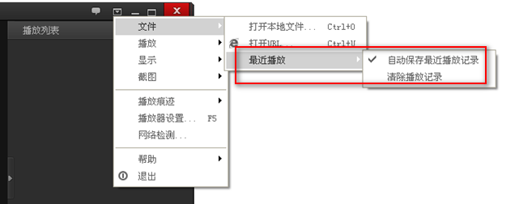
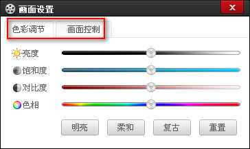

百度影音常见问题
- 什么是百度影音？百度影音有什么特点？
- 哪里可以下载到百度影音？
- 安装成功后我要如何播放媒体文件？
- 如何关联一个媒体文件？
- 一个电影我还没播放完就关闭了百度影音，我下次再播放这个电影的时候是从上次结 束位置开始的吗？
- 我在右键菜单点了截图，可是截下来的图片到哪去了？
- 我以前习惯了其它播放器的快捷键方式，现在想用百度影音，可以设置成我习惯的快捷键吗？
- 在线播放和本地播放有何区别？怎么样看？
- 为什么有的时候我只添加一个视频，会拉进来一堆？怎么才能只添加单个视频？
- 磁盘满了如何处理？
- 退出时清除播放痕迹：怎么把我的播放列表整个清除了？
- 如何完全退出百度影音？
- 页面播放的东西，会在本地存一份么？存在哪里？
- 百度影音太占网速，一播放家里其他人都不能上网了？
- 为什么安装了还是提示要安装？
- 为什么一直没缓冲？
- 为什么播放的时候有声音没图像？
- 如何调节亮度、对比度、颜色等？
- 在非中文操作系统下，不能正常使用百度影音？
- 我用的Mac电脑安装win7 操作系统，看网页视频时不能缓冲？
1.什么是百度影音？百度影音有什么特点？
百度影音是由百度公司最新推出的一款全新体验的播放器。支持主流媒体格式的视频、音频文件，实现本地播放和在线点播。
百度影音将不断完善产品性能、产品体验及产品功能；让它成为您休闲娱乐的伙伴，让您的工作与生活充满乐趣，为您提供优秀的视听服务。
2.哪里可以下载到百度影音？
点击这里下载最新版本的百度影音安装程序。
3.安装成功后我要如何播放媒体文件？
1）打开本地文件
通过在资源管理器中双击已经关联百度影音的文件，就可以用百度影音打开该媒体文件。或者在打开百度影音后，在百度影音主界面点击【
 】打开相应的媒体文件。
】打开相应的媒体文件。
2）在线播放文件
首页点击打开文件右侧 ，接着点击 ，接着会弹出
，接着会弹出
输入相应的url地址，点击确定即可在线播放。
4.如何关联一个媒体文件？
点击主界面右上角的 ，打开主菜单，选择“设置”中的“参数设置”；在“参数设置”面板中选择“文件关联”，选择您需要关联的文件类型。
，打开主菜单，选择“设置”中的“参数设置”；在“参数设置”面板中选择“文件关联”，选择您需要关联的文件类型。
5.一个电影我还没播放完就关闭了百度影音，我下次再播放这个电影的时候是从上次结束位置开始的吗？
缺省设置是从上次结束位置开始播放的。您也可以通过以下方式改变这个设置：点击主界面右上角的答：缺省设置是从上次结束位置开始播放的。您也可以通过以下方式改变这个设置：点击主界面右上角的 ，打开主菜单，选择“播放器设置”；在“播放器设置”面板中选择“播放”，去掉“记忆上次关闭播放器时文件的播放位置”的选项。打开主菜单，选择“播放器设置”，在“播放”面板中去掉“记忆上次关闭播放器时文件的播放位置”的选项。
，打开主菜单，选择“播放器设置”；在“播放器设置”面板中选择“播放”，去掉“记忆上次关闭播放器时文件的播放位置”的选项。打开主菜单，选择“播放器设置”，在“播放”面板中去掉“记忆上次关闭播放器时文件的播放位置”的选项。
6.我在右键菜单点了截图，可是截下来的图片到哪去了？
在菜单上点击“截图”后，在屏幕左上角会显示截屏是否成功了。如果截图成功，截图会缺省保存到“我的文档”中的“百度影音截图”文件夹下。您可以通过以下方式查看截图保存的目录。打开右键菜单选择“截图”中的“打开截图保存文件夹”。
您也可以修改截图保存的路径。打开右键菜单选择“截图”中的“设置截图选项”，在打开的“参数设置”面板中的“其他设置”，在“截屏存储路径”中查看或修改目录。
7.我以前习惯了其它播放器的快捷键方式，现在想用百度影音，可以设置成我习惯的快捷键吗？
可以。点击主界面右上角的主菜单【 】，选择“播放器设置”中的“热键”，您可以根据自己的习惯点击键盘相应的按键自定义快捷键。
】，选择“播放器设置”中的“热键”，您可以根据自己的习惯点击键盘相应的按键自定义快捷键。
8.在线播放和本地播放有何区别？怎么样看？
百度影音支持在线播放，当您输入URL地址在线播放时
1） 播放器的显示和本地播放在主界面左下角有一点细微的差别，出现  ；鼠标滑上去之后会显示出影片的相应信息
；鼠标滑上去之后会显示出影片的相应信息
2） 播放列表处 会显示下载的百分比
9.为什么有的时候我只添加一个视频，会拉进来一堆？怎么才能只添加单个视频？
当开启了添加相似名称文件功能的时候，添加一个文件时会把关联的剧集都添加进来。在播放器设置-播放面板中取消勾选 播放连续剧时自动在文件夹里查找关联文件播放 一项即可。
10.磁盘满了如何处理？
在下载过程中若硬盘空间不足，百度影音会弹出提示窗口。只需重新设置缓冲目录或者删除旧缓冲文件即可。
11.退出时清除播放痕迹：怎么把我的播放列表整个清除了？
播放痕迹是指播放列表以及最近播放中的所有记录。如图，当您勾选了退出时清除播放痕迹一项时，每次关闭百度影音将会清空播放列表和最近播放记录。
您也可以单独对播放列表和最近播放记录进行设置，如图：

12.如何完全退出百度影音？
1）在系统托盘图标上右键选择完全退出
2）在播放器设置-系统中勾选退出时自动结束p2p进程
13.页面播放的东西，会在本地存一份么？存在哪里？
会。在播放器设置-下载面板中可以查看和设置缓冲文件目录。

14.百度影音太占网速，一播放家里其他人都不能上网了？
百度影音为达到更好的缓冲效果，有时可能会出现过度占用网速的情况。您可以在播放器设置-下载面板中设置最大上传下载速度。如图：
15.为什么安装了还是提示要安装？
浏览器不支持或者没有成功注册，请参考以下解决方法
1、安装后重新打开浏览器
2、换用ie浏览器
3、卸载以前安装过的版本再安装新版
16.为什么一直没缓冲？
1、缓存目录无法写入或者磁盘空间已满
2、当前网络限制对百度P2P服务器的访问
3、安装目录使用了中文
4、新旧版本播放列表不兼容
5、该资源没有查询到P2P源
6、其他
解决方法：1、卸载后重新安装新版本
2、重新设置缓冲目录
3、联系站长或管理员
17.为什么播放的时候有声音没图像？
1、可能文件本身是损坏的。
2、百度影音解码器有待完善。欢迎将不能播放的文件提交给管理员。
18.如何调节亮度、对比度、颜色等？
1）本地播放：
画面上单击右键弹出菜单，选择画面-画面控制 或 色彩调节
弹出对话框：

2）网页播放：
画面上单击右键，选择画面-画面设置：
弹出对话框：
在对话框中进行调节。
19.在非中文操作系统下，不能正常使用百度影音？
在非中文的操作系统下，请将安装目录设置在英文目录下，同时缓冲文件路径也设置在英文目录下即可。
20.我用的Mac电脑安装win7 操作系统，看网页视频时不能缓冲？
百度影音在安装时默认将缓冲目录设置在空间最大的盘符下，在win7系统的mac电脑中有可能这一路径是不能写入的，所以造成缓冲一直为0不能下载影片。 只需手动更改缓冲路径即可。同上图。